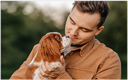
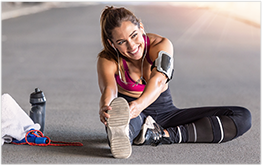
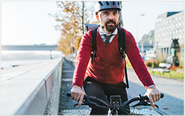

T('home',`
<div class="home">
	<div class="entra">
		Banca Popolare S. Angelo entra nel mercato
		dei prodotti assicurativi digitali con una gamma
		di soluzioni complete e modulari in collaborazione con Net Insurance.
	</div>
	<div class="inno">
		L'innovativa offerta si inserisce nel filone dell'InsurTech che sta rivoluzionando
		il comparto assicurativo degli ultimi anni. Un trend che sta portando alla nascita
		di nuove sfide nell'ambito della digitalizzazione, dando vita a prodotti sempre
		più calibrati sulle precise esigenze della clientela.
	</div>
	<div class="partners">
		<div class="partner left">
			<div style="padding-top:8px">
				Compagnia di<br class="mobile">
				assicurazione
			</div>
			
		</div>
		<div class="partner right">
			<div>
				In collaborazione<br class="mobile">
				con l'Intermediario<br>
				assicurativo
			</div>
			
		</div>
	</div>
	<div class="prods">
		<div class="prod">
			
			<h1>Net Pet</h1>
			<p>
				<b>L'assicurazione<br> indispensabile per i tuoi<br> amici a 4 zampe</b><br>
				<br>
				Il prodotto completo e<br> personalizzabile dedicato a<br> cani e gatti.
			</p><br>
			<button onclick="goPrd('pet')">proteggi chi ami</button>
		</div>
		<div class="prod mid">
			
			<h1>Net Sport</h1>
			<p>
				<b>L'assicurazione istantanea<br> che ogni sportivo aspettava.</b><br>
				<br>
				L'assicurazione sport online,<br>
				acquistabile online con pochi<br>
				click, studiata per te che ami<br>
				mantenerti in forma attraverso<br>
				l'attivita sportiva!
			</p><br>
			<button onclick="goPrd('sport')">senza rischi</button>
		</div>
		<div class="prod">
			
			<h1>Net Bike</h1>
			<p>
				<b>L'assicurazione istantanea<br> che ogni biker aspettava.</b><br>
				<br>
				L'assicurazione dedicata<br>
				a chi va in bicicletta,<br>
				acquistabile online con pochi<br>
				click, studiata per te che ami<br> pedalare in strada!
			</p><br>
			<button onclick="goPrd('bike')">pedala in sicurezza</button>
		</div>
	</div>
</div>
[%= T('header').render({nav:null,navAction:null,navClass:null,navLogo:null}) %]
[%= T('footer').render() %]
[%= T('cookie').render() %]
`)
